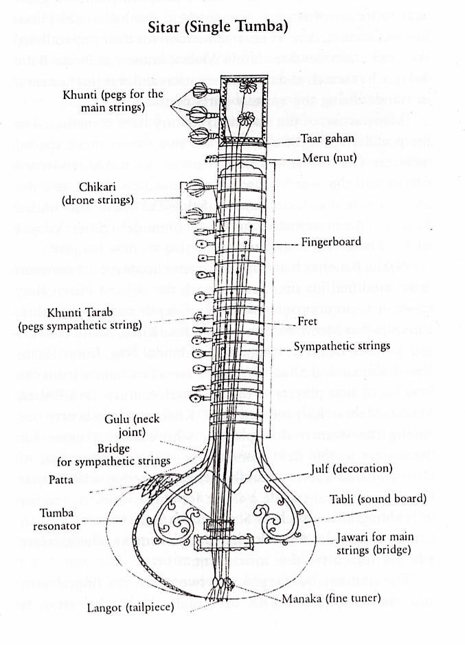

At present the sitar is the most popular instrument in Hindustani music. The structure and tonal quality of the modern sitar is a result of several years of hard work and devotion put in by artists and craftsmen. Craftsmen of Calcutta need special mention for their contribution to the making of a structurally perfect instrument. The basic technical and physical principles of the sitar are just like those of the veena, but the sitar is easier to handle and is more portable. For centuries, the sitar has undergone a sea of transformation, and has improved beyond recognition. The twentieth century can be called the golden era of the sitar. Stalwarts like Ravi Shankar, Vilayat Khan, Nikhil Banerjee, Uma Shankar Misra, Abdul Haleem Jaffar Khan, Rais Khan and many others have carved a special niche for the instrument in the world of music. More than three hypotheses are prevalent among the musicologists regarding the origin of the sitar. Since none of these has been unanimously accepted, there has been a lot of confusion regarding its origin. Actually the subject needs thorough research, and before reaching any conclusion, all the points should be taken into consideration.
Mulism invasions in India starting from the early eighth century to fourteenth and fifteenth centuries, from the north- western front, exposed Indians to the music, literature and social customs of Turkish, Persian and central Asian cultures. Around this time the instrument called tambur or tanbur appeared on the Indian music scenario. Ameer Khusarau described the tambur as having four strings, two of silk and two of metal. InAin-i-Akbari, four tambur players are included among the thirty-six listed musicians of the court of Akbar. A variety of tanbur with three strings instead of four is termed as seh-tar.
The instrument and a number of varieties were developed. As Allyn Miner puts it, 'Paintings and drawings show that more than one version of the instrument already existed at the end of the eighteenth century. The shape of the bridge, the material of frets, the positions of the tuning pegs, the width of the neck, the position and tuning of the strings and the right hand position help us in determining sitar types and in tracing the progress of change.'
